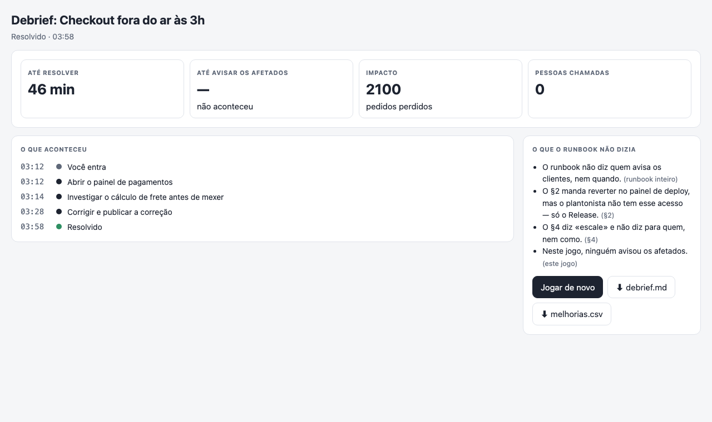
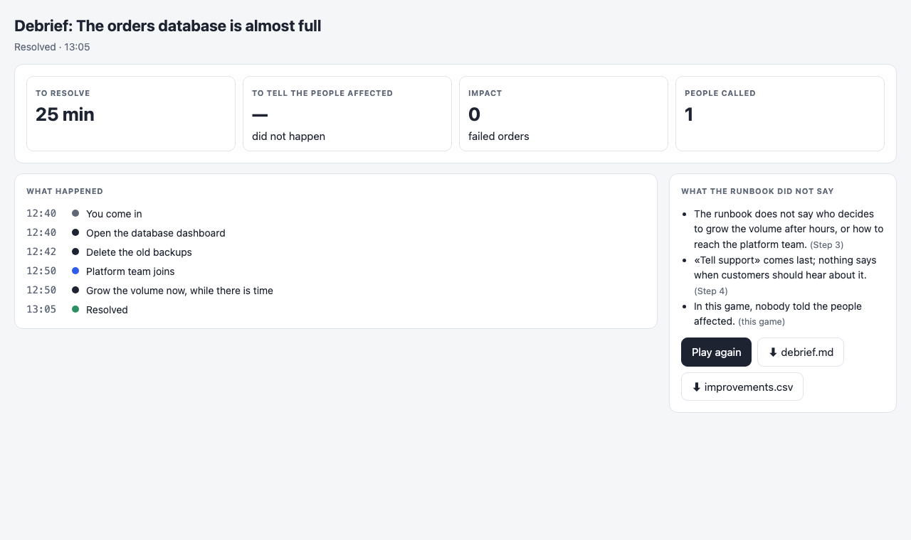

Checkout fora do ar às 3hCheckout down at 3 a.m., right after a deploy — the on-call cannot revert alone, and nobody owns telling the customers. PlayFacilitator’s scriptThe drill fileThe runbookdress-rehearsal
Give Claude your incident runbook. Get a drill your team can play — a clock, choices, consequences, who is in the room — and, at the end, what the runbook does not say.

How it goes
1 · Point it at the runbook.
«Make a drill from our checkout runbook.» Claude reads it and drafts the incident as scenes.
«Make a drill from our checkout runbook.» Claude reads it and drafts the incident as scenes.
2 · It asks what the runbook does not say.
Who can revert? Who tells the customers? Escalate to whom? Each question with its bet.
Who can revert? Who tells the customers? Escalate to whom? Each question with its bet.
3 · Play it.
Alone in ten minutes, or projected for the team on a Friday. No score: the clock is the score.
Alone in ten minutes, or projected for the team on a Friday. No score: the clock is the score.
4 · Fix the runbook.
The debrief lists what was missing — download it, and the improvements as a CSV.
The debrief lists what was missing — download it, and the improvements as a CSV.
Examples — play them here

The orders database is almost fullThe orders database disk is almost full at lunchtime — and the biggest files are the ones you must never delete. PlayFacilitator’s scriptThe drill fileThe runbook